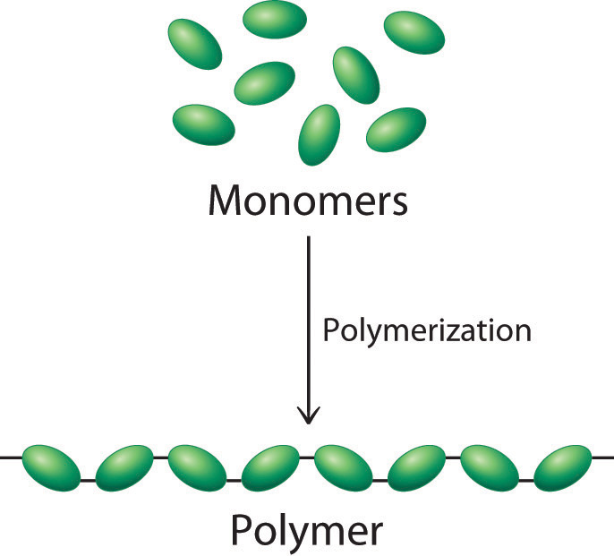
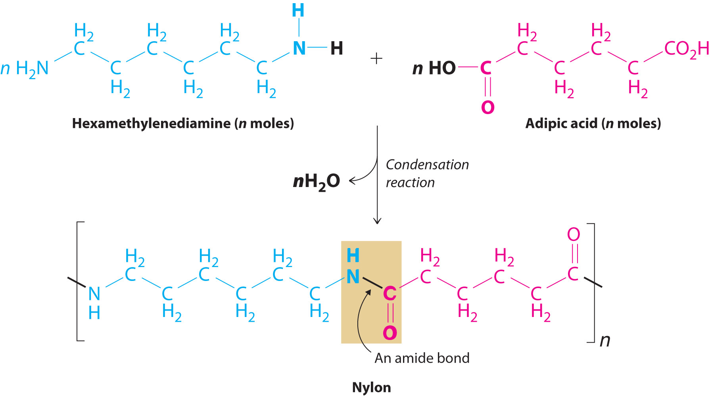

Most of the solids discussed so far have been molecules or ions with low molecular masses, ranging from tens to hundreds of atomic mass units. Many of the molecular materials in consumer goods today, however, have very high molecular masses, ranging from thousands to millions of atomic mass units, and are formed from a carefully controlled series of reactions that produce giant molecules called polymersA giant molecule that consists of many basic structural units (monomers) connected in a chain or network by covalent bonds. (from the Greek poly and meros, meaning “many parts”). Polymers are used in corrective eye lenses, plastic containers, clothing and textiles, and medical implant devices, among many other uses. They consist of basic structural units called monomersThe basic structural unit of a polymer., which are repeated many times in each molecule. As shown schematically in Figure 12.31 "Polymer Formation", polymerizationA process by which monomers are connected into chains or networks by covalent bonds. is the process by which monomers are connected into chains or networks by covalent bonds. Polymers can form via a condensation reaction, in which two monomer molecules are joined by a new covalent bond and a small molecule such as water is eliminated, or by an addition reaction, a variant of a condensation reaction in which the components of a species AB are added to adjacent atoms of a multiple bond. (For more information about condensation and addition reactions, see Chapter 3 "Chemical Reactions", Section 3.5 "Classifying Chemical Reactions".) Many people confuse the terms plastics and polymers. PlasticThe property of a material that allows it to be molded into almost any shape. is the property of a material that allows it to be molded into almost any shape. Although many plastics are polymers, many polymers are not plastics. In this section, we introduce the reactions that produce naturally occurring and synthetic polymers.
Figure 12.31 Polymer Formation
During a polymerization reaction, a large number of monomers become connected by covalent bonds to form a single long molecule, a polymer.
Polymers are formed via condensation or addition reactions.
Polymers that occur naturally are crucial components of all organisms and form the fabric of our lives. Hair, silk, skin, feathers, muscle, and connective tissue are all primarily composed of proteins, the most familiar kind of naturally occurring, or biological, polymer. The monomers of many biological polymers are the amino acids introduced in Chapter 5 "Energy Changes in Chemical Reactions", Section 5.4 "Thermochemistry and Nutrition", each called an amino acid residue. The residues are linked together by amide bonds, also called peptide bonds, via a condensation reaction where H2O is eliminated:
In the above equation, R represents an alkyl or aryl group, or hydrogen, depending on the amino acid. We write the structural formula of the product with the free amino group on the left (the N-terminus) and the free carboxylate group on the right (the C-terminus). For example, the structural formula for the product formed from the amino acids glycine and valine (glycyl-valine) is as follows:
The most important difference between synthetic and naturally occurring polymers is that the former usually contain very few different monomers, whereas biological polymers can have as many as 20 different kinds of amino acid residues arranged in many different orders. Chains with less than about 50 amino acid residues are called peptidesBiological polymers with less than about 50 amino acid residues., whereas those with more than about 50 amino acid residues are called proteinsBiological polymers with more than 50 amino acid residues linked together by amide bonds.. Many proteins are enzymesCatalysts that occur naturally in living organisms and that catalyze biological reactions., which are catalysts that increase the rate of a biological reaction.
Synthetic polymers usually contain only a few different monomers, whereas biological polymers can have many kinds of monomers, such as amino acids arranged in different orders.
Many small peptides have potent physiological activities. The endorphins, for example, are powerful, naturally occurring painkillers found in the brain. Other important peptides are the hormones vasopressin and oxytocin. Although their structures and amino acid sequences are similar, vasopressin is a blood pressure regulator, whereas oxytocin induces labor in pregnant women and milk production in nursing mothers. Oxytocin was the first biologically active peptide to be prepared in the laboratory by Vincent du Vigneaud (1901–1978), who was awarded the Nobel Prize in Chemistry in 1955.
Many of the synthetic polymers we use, such as plastics and rubbers, have commercial advantages over naturally occurring polymers because they can be produced inexpensively. Moreover, many synthetic polymers are actually more desirable than their natural counterparts because scientists can select monomer units to tailor the physical properties of the resulting polymer for particular purposes. For example, in many applications, wood has been replaced by plastics that are more durable, lighter, and easier to shape and maintain. Polymers are also increasingly used in engineering applications where weight reduction and corrosion resistance are required. Steel rods used to support concrete structures, for example, are often coated with a polymeric material when the structures are near ocean environments where steel is vulnerable to corrosion (For more information on corrosion, see Chapter 19 "Electrochemistry", Section 19.6 "Corrosion".) In fact, the use of polymers in engineering applications is a very active area of research.
Probably the best-known example of a synthetic polymer is nylon (Figure 12.32 "The Synthesis of Nylon"). Its monomers are linked by amide bonds (which are called peptide bonds in biological polymers), so its physical properties are similar to those of some proteins because of their common structural unit—the amide group. Nylon is easily drawn into silky fibersA particle of a synthetic polymer that is more than 100 times longer than it is wide. that are more than a hundred times longer than they are wide and can be woven into fabrics. Nylon fibers are so light and strong that during World War II, all available nylon was commandeered for use in parachutes, ropes, and other military items. With polymer chains that are fully extended and run parallel to the fiber axis, nylon fibers resist stretching, just like naturally occurring silk fibers, although the structures of nylon and silk are otherwise different. Replacing the flexible –CH2– units in nylon by aromatic rings produces a stiffer and stronger polymer, such as the very strong polymer known as Kevlar. Kevlar fibers are so strong and rigid that they are used in lightweight army helmets, bulletproof vests, and even sailboat and canoe hulls, all of which contain multiple layers of Kevlar fabric.
Figure 12.32 The Synthesis of Nylon
Nylon is a synthetic condensation polymer created by the reaction of a dicarboxylic acid and a diamine to form amide bonds and water.
A fiberglass mat (left) and a Kevlar vest (right).
Not all synthetic polymers are linked by amide bonds—for example, polyesters contain monomers that are linked by ester bonds. Polyesters are sold under trade names such as Dacron, Kodel, and Fortrel, which are used in clothing, and Mylar, which is used in magnetic tape, helium-filled balloons, and high-tech sails for sailboats. Although the fibers are flexible, properly prepared Mylar films are almost as strong as steel.
Polymers based on skeletons with only carbon are all synthetic. Most of these are formed from ethylene (CH2=CH2), a two-carbon building block, and its derivatives. The relative lengths of the chains and any branches control the properties of polyethylene. For example, higher numbers of branches produce a softer, more flexible, lower-melting-point polymer called low-density polyethylene (LDPE), whereas high-density polyethylene (HDPE) contains few branches. Substances such as glass that melt at relatively low temperatures can also be formed into fibers, producing fiberglass.
Because most synthetic fibers are neither soluble nor low melting, multistep processes are required to manufacture them and form them into objects. Graphite fibers are formed by heating a precursor polymer at high temperatures to decompose it, a process called pyrolysisA high-temperature decomposition reaction that can be used to form fibers of synthetic polymers.. The usual precursor for graphite is polyacrylonitrile, better known by its trade name—Orlon. A similar approach is used to prepare fibers of silicon carbide using an organosilicon precursor such as polydimethylsilane {[–(CH3)2Si–]n}. A new type of fiber consisting of carbon nanotubes, hollow cylinders of carbon just one atom thick, is lightweight, strong, and impact resistant. Its performance has been compared to that of Kevlar, and it is being considered for use in body armor, flexible solar panels, and bombproof trash bins, among other uses.
Because there are no good polymer precursors for elemental boron or boron nitride, these fibers have to be prepared by time-consuming and costly indirect methods. Even though boron fibers are about eight times stronger than metallic aluminum and 10% lighter, they are significantly more expensive. Consequently, unless an application requires boron’s greater resistance to oxidation, these fibers cannot compete with less costly graphite fibers.
Polyethylene is used in a wide variety of products, including beach balls and the hard plastic bottles used to store solutions in a chemistry laboratory. Which of these products is formed from the more highly branched polyethylene?
Given: type of polymer
Asked for: application
Strategy:
Determine whether the polymer is LDPE, which is used in applications that require flexibility, or HDPE, which is used for its strength and rigidity.
Solution:
A highly branched polymer is less dense and less rigid than a relatively unbranched polymer. Thus hard, strong polyethylene objects such as bottles are made of HDPE with relatively few branches. In contrast, a beach ball must be flexible so it can be inflated. It is therefore made of highly branched LDPE.
Exercise
Which products are manufactured from LDPE and which from HPDE?
Answer:
Polymers are giant molecules that consist of long chains of units called monomers connected by covalent bonds. Polymerization is the process of linking monomers together to form a polymer. Plastic is the property of a material that allows it to be molded. Biological polymers formed from amino acid residues are called peptides or proteins, depending on their size. Enzymes are proteins that catalyze a biological reaction. A particle that is more than a hundred times longer than it is wide is a fiber, which can be formed by a high-temperature decomposition reaction called pyrolysis.
How are amino acids and proteins related to monomers and polymers? Draw the general structure of an amide bond linking two amino acid residues.
Although proteins and synthetic polymers (such as nylon) both contain amide bonds, different terms are used to describe the two types of polymer. Compare and contrast the terminology used for the